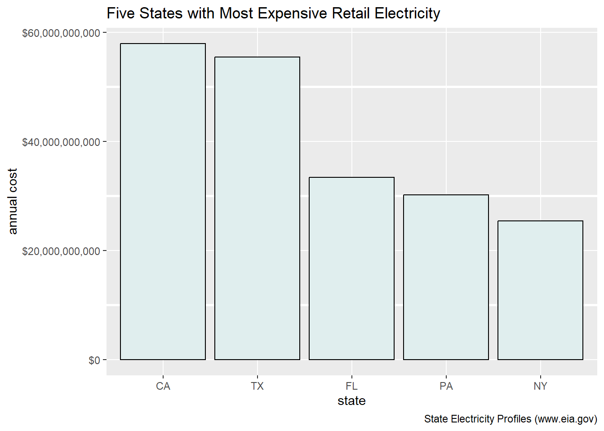
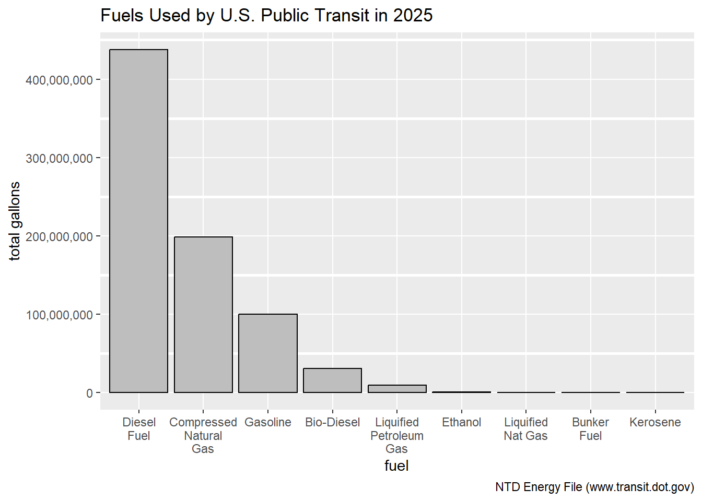
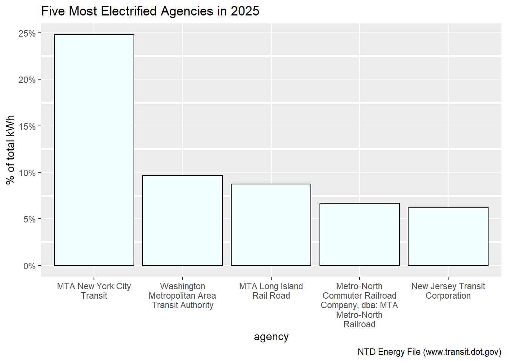
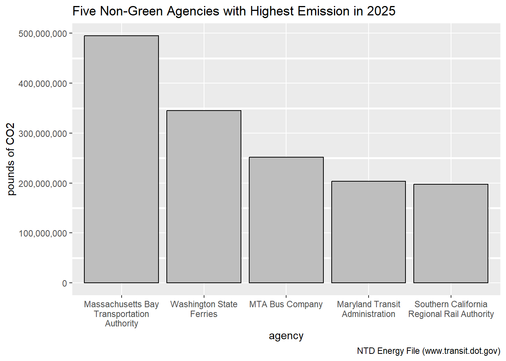

Task 1b: Data Acquisition of 2025 Energy Consumption Report
Code
load_ntd_energy <-function(){library(readxl)library(httr2)library(tidyverse)library(fs)# Create 'data/mp02' directory if not already present DATA_DIR <- fs::path("data", "mp02") fs::dir_create(DATA_DIR, recurse=TRUE) NTD_ENERGY_FILE <- fs::path(DATA_DIR, "2025_ntd_energy.xlsx")if(!fs::file_exists(NTD_ENERGY_FILE)){library(httr2)request("https://www.transit.dot.gov/") |>req_url_path("sites","fta.dot.gov","files","2026-09","2025 Energy Consumption_260806.xlsx") |>req_headers(`User-Agent`="Mozilla/5.0 (Macintosh; Intel Mac OS X 10.15; rv:149.0) Gecko/20100101 Firefox/149.0") |>req_perform(NTD_ENERGY_FILE) }if(file.info(NTD_ENERGY_FILE)$size <1e4){cat("I was unable to download the NTD Energy File. Please try again.\n")stop("Download failed. Please delete the corrupted file by running `unlink('data/mp02/2025_ntd_energy.xlsx')` and try again.") } to_numeric_fill_0 <-function(x){ x <-if_else(x =="-", NA, x)replace_na(as.numeric(x), 0) }read_excel(NTD_ENERGY_FILE) |>select(-c(`Reporter Type`, `Reporting Module`, `Gallons of Other Fuel`, `Other Fuel Description`)) |>mutate(across(-c(`Agency Name`, `Mode`,`TOS`), to_numeric_fill_0)) |>group_by(`NTD ID`, `Mode`, `Agency Name`) |>summarize(across(where(is.numeric), sum), .groups ="keep") |>mutate(ENERGY =sum(c_across(c(where(is.numeric))))) |>filter(ENERGY >0) |>select(-ENERGY) |>ungroup()}NTD_ENERGY <-load_ntd_energy()## Warning: There was 1 warning in `mutate()`.## ℹ In argument: `across(-c(`Agency Name`, Mode, TOS), to_numeric_fill_0)`.## Caused by warning in `replace_na()`:## ! NAs introduced by coercion
Task 1c: Data Acquisition of 2025 Agency Transit Service Report
Code
load_ntd_service <-function(){library(httr2)library(tidyverse)library(fs)# Create 'data/mp02' directory if not already present DATA_DIR <- fs::path("data", "mp02") fs::dir_create(DATA_DIR, recurse=TRUE) NTD_SERVICE_FILE <- fs::path(DATA_DIR, "2025_ntd_service.csv")if(!fs::file_exists(NTD_SERVICE_FILE)){library(httr2)request("https://data.transportation.gov/resource/4fir-qbim.csv") |>req_url_query(`$query`=paste("SELECT `_5_digit_ntd_id` AS `NTD_ID`", "`max_agency` AS `AGENCY`","`max_reporter_type` AS `reporter_type`","`max_organization_type` AS `organization_type`","`max_city` AS `city`","`max_state` AS `state`","`mode`","`type_of_service`","`max_primary_uza_code` as `uza_code`","`max_primary_uza_name` as `uza_name`","`max_primary_uza_area_sq_miles` as `uza_sq_miles`","`max_primary_uza_population` as `uza_population`","`max_service_area_sq_miles` as `service_area_sq_miles`","`max_service_area_population` as `service_area_population`","`questionable_record` as `flagged_likely_inaccurate`","`sum_unlinked_passenger_trips_upt` as `total_upt`","`sum_passenger_miles` WHERE caseless_one_of(`report_year`, '2025') limit 50000", sep=",")) |>req_headers(`User-Agent`="Mozilla/5.0 (Macintosh; Intel Mac OS X 10.15; rv:149.0) Gecko/20100101 Firefox/149.0") |>req_perform(NTD_SERVICE_FILE) }if(file.info(NTD_SERVICE_FILE)$size <1e4){cat("I was unable to download the NTD Service File. Please try again.\n")stop("Download failed. Please delete the corrupted file by running `unlink('data/mp02/2025_ntd_service.xlsx')` and try again.") }read_csv(NTD_SERVICE_FILE) |>mutate(flagged_likely_inaccurate =!is.na(flagged_likely_inaccurate))}NTD_SERVICE <-load_ntd_service()## Rows: 3762 Columns: 17## ── Column specification ────────────────────────────────────────────────────────## Delimiter: ","## chr (11): NTD_ID, AGENCY, reporter_type, organization_type, city, state, mod...## dbl (6): uza_sq_miles, uza_population, service_area_sq_miles, service_area_...## ## ℹ Use `spec()` to retrieve the full column specification for this data.## ℹ Specify the column types or set `show_col_types = FALSE` to quiet this message.
Task 2: Recoding “Mode” in 2025 Energy Consumption Report
Code
# Find the acronyms of "Mode" and recode them with NTD Glossary.NTD_ENERGY <- NTD_ENERGY |>mutate(n_distinct(Mode), Mode =recode_values(Mode,"AR"~"Alaska Railroad","CB"~"Commuter Bus","CC"~"Cable Car","CR"~"Commuter Rail","DR"~"Demand Response","FB"~"Ferryboat","HR"~"Heavy Rail","IP"~"Inclined Plane","LR"~"Light Rail","MB"~"Bus","MG"~"Monorail and Automated Guideway modes","RB"~"Bus Rapid Transit","SR"~"Streetcar Rail","TB"~"Trolleybus","TR"~"Aerial Tramway","VP"~"Vanpool","YR"~"Hybrid Rail"))|>select(-`n_distinct(Mode)`)
Task 3a: First Question
Code
AnnualCost <- EIA_SEP_REPORT |># Delete columns not needed for the analysis. select(-1, -2, -5) |># Relocate and rename the column of abbreviated states. relocate(3, .before =1) |>rename("state"="abbreviation") |># Find the annual cost of electricity generated in each state. mutate(annual_cost = electricity_price_MWh * generation_MWh) |># Find five states with highest annual cost of electricity. ungroup() |>slice_max(annual_cost, n =5)# Create bar chart of the five states.ggplot(AnnualCost, aes(x =reorder(state, -annual_cost), y = annual_cost)) +xlab("state") +ylab("annual cost") +labs(title ="Five States with Most Expensive Retail Electricity",caption ="State Electricity Profiles (www.eia.gov)") +geom_col(fill ="azure2", color ="black") +theme(panel.grid.minor =element_line(linewidth =1, color ="white")) +scale_y_continuous(labels=scales::dollar)

Task 3a: Second Question
Code
DirtyMix <- EIA_SEP_REPORT |># Delete columns not needed for the analysis.select(-3, -5) |># Relocate the columns of abbreviated states and primary source. Rename the former column. relocate(4, 2, .before =1) |>rename("state"="abbreviation") |># Calculate total pounds of carbon dioxide emitted to generate electricity in each state.mutate(total_emission = CO2_MWh * generation_MWh) |># Find five states with highest annual emission of carbon dioxide.ungroup() |>slice_max(total_emission, n =5)# Create table of the five states.library(gt)gt(DirtyMix) |>tab_header(title ="Five States with Highest Annual Emission of Carbon Dioxide",subtitle ="(in Pounds) for Electricity") |>fmt_number(columns =c(generation_MWh, total_emission), sep_mark =",",decimals =0)
Five States with Highest Annual Emission of Carbon Dioxide
(in Pounds) for Electricity
state
primary_source
CO2_MWh
generation_MWh
total_emission
TX
Natural gas
823
566,502,688
466,231,712,224
FL
Natural gas
765
266,119,236
203,581,215,540
PA
Natural gas
659
241,498,648
159,147,609,032
OH
Natural gas
1005
142,746,706
143,460,439,530
IN
Coal
1393
97,012,880
135,138,941,840
Task 3a: Third Question
Code
CO2_average <- EIA_SEP_REPORT |># Calculate the weight of each state based on generation of electricity.mutate(weight_generation_MWh =round(generation_MWh /sum(generation_MWh), digits =2)) |># Find the weighted average of carbon dioxide emitted per megawatt hour of electricity.summarize(weighted_average =round(weighted.mean(CO2_MWh, weight_generation_MWh),digits =2))
The weighted average was 798.01 pounds of carbon dioxide, emitted per megawatt hour of electricity produced in the U.S.
Task 3a: Fourth Question
Code
RareSource <- EIA_SEP_REPORT |># Calculate the annual cost of electricity in each state.mutate(annual_cost = electricity_price_MWh * generation_MWh) |># Count the number of primary energy sources and find the three rarest in the U.S. group_by(primary_source) |>mutate(n =n()) |>ungroup() |>slice_min(n, n =3) |># Use columns needed for the table. Rename and relocate the column of abbreviated states.select(2, 6, 7) |>rename("state"="abbreviation") |>relocate(2, .before =1)# Create a table.library(gt)gt(RareSource)|>tab_header(title ="States with Three Rarest Energy Sources",subtitle ="and Annual Electricity Costs") |>fmt_currency(columns = annual_cost,currency ="dollar",decimals =0)
States with Three Rarest Energy Sources
and Annual Electricity Costs
state
primary_source
annual_cost
HI
Petroleum
$3,481,172,020
ID
Hydroelectric
$1,905,370,154
IA
Wind
$6,581,351,423
KS
Wind
$6,467,738,976
NM
Wind
$3,644,211,589
OR
Hydroelectric
$7,183,864,764
SD
Wind
$2,268,785,748
VT
Hydroelectric
$415,861,833
WA
Hydroelectric
$10,372,888,124
Task 3a: Fifth Question
Code
Cleaner <- EIA_SEP_REPORT |># Find figures for New York and Texas.filter(abbreviation %in%c("NY", "TX")) |># Calculate total pounds of carbon dioxide emission for the two states, and ratio of emission.mutate(totalCO2_emission = CO2_MWh * generation_MWh,ratio_emission =round(totalCO2_emission /lag(totalCO2_emission), digits =0)) |>filter(ratio_emission >0) |>pull(ratio_emission)
New York’s energy mix is around 7 times cleaner than Texas’s.
Task 3b: First Question
Code
Agency <- NTD_ENERGY |># Find columns needed for the analysis. Delete "Gallons of" in column names.select("Agency Name"|starts_with("Gallons of")) |>rename_with(~str_remove(., "Gallons of")) |># Combine rows with common agencies and add gallons for each fuel.group_by(`Agency Name`) |>summarize(across(where(is.numeric), ~sum(.x, na.rm =TRUE))) |># Calculate total gallons of fuels used by each agency. Relocate the total gallons column. mutate(total_gallons =rowSums(across(where(is.numeric)), na.rm =TRUE)) |>relocate(total_gallons, .after =1) |># Find five agencies that used most gallons of fuels. Delete columns with only zeros.ungroup() |>slice_max(total_gallons, n =5) |>select(where(~!is.numeric(.) |sum(. !=0, na.rm =TRUE) >0))# Create table of the five agencies.library(gt)gt(Agency) |>tab_header(title ="Agencies that Used Most Gallons of Fuels in 2025") |>fmt_number(columns =where(is.numeric),sep_mark =",",decimals =0) |>cols_align(align ="center",columns =where(is.numeric))
Agencies that Used Most Gallons of Fuels in 2025
Agency Name
total_gallons
Compressed Natural Gas
Diesel Fuel
Gasoline
New Jersey Transit Corporation
41,721,414
1,521,492
38,144,027
2,055,895
MTA New York City Transit
40,816,461
6,328,381
30,217,934
4,270,146
Los Angeles County Metropolitan Transportation Authority
Fuel <- NTD_ENERGY |># Find columns needed for the analysis. Delete "Gallons of" in column names. select(starts_with("Gallons of")) |>rename_with(~str_remove(., "Gallons of")) |># Calculate the total gallons used for each fuel.summarize(across(where(is.numeric), ~sum(.x, na.rm =TRUE))) |># List each fuel and total gallons used in two columns.pivot_longer(cols =1:9,names_to ="fuel",values_to ="total_gallons" )# Create a bar chart.ggplot(Fuel, aes(x =reorder(fuel, -total_gallons), y = total_gallons)) +xlab("fuel") +ylab("total gallons") +labs(title ="Fuels Used by U.S. Public Transit in 2025",caption ="NTD Energy File (www.transit.dot.gov)") +geom_col(fill ="gray", color ="black") +theme(panel.grid.minor =element_line(linewidth =1, color ="white")) +scale_y_continuous(labels = scales::comma) +scale_x_discrete(labels = scales::label_wrap(11))

Task 3b: Third Question
Code
# Find the least commonly used fuel from the data in Task 3b, Second Question.Least <- Fuel |>filter(total_gallons >0) |>slice_min(total_gallons, n =1) |>pull(fuel)# Find the gallons of least commonly used fuel.Least_Figure <- Fuel |>filter(total_gallons >0) |>slice_min(total_gallons, n =1) |>pull(total_gallons)
Liquified Nat Gas was the least commonly used fuel at 223,362 gallons for U.S. public transit in 2025.
Task 4: First Question
Code
# Find states with nuclear as the primary source. Rename the column of abbreviated states.Nuclear <- EIA_SEP_REPORT |>filter(primary_source =="Nuclear") |>select(abbreviation) |>rename("state"="abbreviation")# Calculate total UPT for each state.UPT <- NTD_SERVICE |>select(state, total_upt) |>group_by(state) |>summarize(across(where(is.numeric), ~sum(.x, na.rm =TRUE)))# Show the total UPT of each state with nuclear as the primary energy source. Nuclear_UPT <-inner_join(UPT, Nuclear, by ="state")
Task 4: Second Question
Code
# Calculate gallons of bio-diesel used by each agency. Exclude agencies with zeros.Bio_diesel <- NTD_ENERGY |>select(`NTD ID`, `Gallons of Bio-Diesel`) |>group_by(`NTD ID`) |>summarize(across(where(is.numeric), ~sum(.x, na.rm =TRUE))) |>filter(`Gallons of Bio-Diesel`>0)# Delete leading zeros in the agency IDs.Metro <- NTD_SERVICE|>mutate(`NTD ID`=as.numeric(NTD_ID)) |># Select columns showing names of agencies with their IDs and metro areas.select(`NTD ID`,`AGENCY`, uza_name) |>distinct()# List agencies with their IDs, metro areas, and gallons of bio-diesel used.Metro_Diesel <-inner_join(Metro, Bio_diesel, by ="NTD ID") |># Find the metro area with most gallons of bio-diesel used by public transit agencies.slice_max(`Gallons of Bio-Diesel`, n =1)
Task 5: Calculate Emissions for Each Agency’s Transit Mode
Code
# Delete leading zeros in the agency IDs and select columns.NTD_SERVICE1 <- NTD_SERVICE |>mutate(`NTD ID`=as.numeric(NTD_ID)) |>select(`AGENCY`, `state`, `NTD ID`) |>distinct()# Join data sets and select columns.Emission_1 <-inner_join(NTD_SERVICE1, NTD_ENERGY, by ="NTD ID") |>select(`AGENCY`, `Mode`, `state`, starts_with("Gallons of"))# Select columns and rename the column of abbreviated states.Emission_2 <- EIA_SEP_REPORT |>select(`abbreviation`, CO2_MWh) |>rename("state"="abbreviation")# Join data sets and delete columns with only zeros for gallons of fuel.Total_Emission <-inner_join(Emission_1, Emission_2, by ="state") |>select(where(~!is.numeric(.) |sum(. !=0, na.rm =TRUE) >0)) |># Use gallons per pound of carbon dioxide based on the EIA and EPA websites. mutate(CO2_totalemission_lbs =`Gallons of Bio-Diesel`*20.83+`Gallons of Compressed Natural Gas`*14.83+`Gallons of Diesel Fuel`*22.45+`Gallons of Ethanol`*12.68+`Gallons of Gasoline`*20.86+`Gallons of Liquified Nat Gas`*9.92+`Gallons of Liquified Petroleum Gas`*12.52)
Task 6: Normalize Emissions to Transit Usage
Code
# Sum the total UPT and passenger miles by each agency's transit mode. NTD_SERVICE2 <- NTD_SERVICE |>summarize(across(where(is.numeric), ~sum(.x, na.rm =TRUE)),.by =c(AGENCY, mode, state)) |># Recode acronyms of "mode" with NTD Glossary. mutate(n_distinct(mode), mode =recode_values(mode,"AR"~"Alaska Railroad","CB"~"Commuter Bus","CC"~"Cable Car","CR"~"Commuter Rail","DR"~"Demand Response","FB"~"Ferryboat","HR"~"Heavy Rail","IP"~"Inclined Plane","LR"~"Light Rail","MB"~"Bus","MG"~"Monorail and Automated Guideway modes","RB"~"Bus Rapid Transit","SR"~"Streetcar Rail","TB"~"Trolleybus","TR"~"Aerial Tramway","VP"~"Vanpool","YR"~"Hybrid Rail"))|># Select columns and rename one. select(1:3, 8, 9) |>rename("Mode"="mode")# Join data sets to calculate each agency's emission per UPT and passenger mile.Transit_Usage <-inner_join(Total_Emission, NTD_SERVICE2, by =c("AGENCY", "Mode", "state")) |>select(1, 12:14)|>group_by(`AGENCY`) |>summarize(across(where(is.numeric), ~sum(.x, na.rm =TRUE))) |>mutate(CO2emission_per_upt = CO2_totalemission_lbs / total_upt,CO2emission_per_passengermile = CO2_totalemission_lbs / sum_passenger_miles)# Find the agency most efficient in carbon dioxide emission per UPT.Efficient_UPT <- Transit_Usage |>filter(CO2_totalemission_lbs >0) |>slice_min(CO2emission_per_upt, n =1) |>pull(AGENCY)# Find the figure of agency's carbon dioxide emission per UPT.Figure_UPT <- Transit_Usage |>filter(CO2_totalemission_lbs >0) |>slice_min(CO2emission_per_upt, n =1) |>pull(CO2emission_per_upt)# Find the agency most efficient in carbon dioxide emission per passenger mile.Efficient_Mile <- Transit_Usage |>filter(CO2_totalemission_lbs >0) |>slice_min(CO2emission_per_passengermile, n =1) |>pull(AGENCY)# Find the figure of the agency's carbon dioxide emission per passenger mile.Figure_Mile <- Transit_Usage |>filter(CO2_totalemission_lbs >0) |>slice_min(CO2emission_per_passengermile, n =1) |>pull(CO2emission_per_passengermile)
CO2 Emission Efficiency based on Total UPT:
The Anaheim Transportation Network, dba: Anaheim Regional Transportation, was most efficient at 0.09 pounds of carbon dioxide emitted per UPT.
CO2 Emission Efficiency based on Total Passenger Miles:
The Tri-County Metropolitan Transportation District of Oregon, dba: TriMet, was most efficient at 0.03 pounds of carbon dioxide emitted per passenger mile.
Task 7a: Agency with Highest Electrification
Code
# Calculate the total "Kilowatt hours" for each agency.Highest_Electric <- NTD_ENERGY |>select(`Agency Name`, starts_with("Kilowatt hours")) |>group_by(`Agency Name`) |>summarize(across(where(is.numeric), ~sum(.x, na.rm =TRUE))) |>mutate(total_kilowatt_hours =rowSums(across(starts_with("Kilowatt hours")), na.rm =TRUE), # Find the agency with highest percentage of total kilowatt hours.highestpercent_kilowatt_hours =round(total_kilowatt_hours/sum(total_kilowatt_hours, na.rm =TRUE) *100,digits =2)) |>slice_max(highestpercent_kilowatt_hours, n =1) |>pull(`Agency Name`)
The agency with highest electrification was MTA New York City Transit.
Task 7b: Worst Non-Green Agency with Highest CO2 Emission
Code
# Exclude agencies that used neither electricity nor hydrogen.Worst_Agency <- NTD_ENERGY|>filter(`Kilowatt hours of Electric Battery`==0) |>filter(`Kilowatt hours of Electric Propulsion`==0) |>filter(`Kilograms of Hydrogen`==0) |># Exclude columns of energy with zeros.select(where(~!is.numeric(.) |sum(. !=0, na.rm =TRUE) >0)) |># Calculate the total gallons of each fuel for every agency.group_by(`Agency Name`) |>summarize(across(where(is.numeric), ~sum(.x, na.rm =TRUE))) |># Calculate total emissions with gallons per pound based on the EIA and EPA websites. mutate(CO2_totalemission_lbs =`Gallons of Bio-Diesel`*20.83+`Gallons of Compressed Natural Gas`*14.83+`Gallons of Diesel Fuel`*22.45+`Gallons of Gasoline`*20.86+`Gallons of Liquified Nat Gas`*9.92+`Gallons of Liquified Petroleum Gas`*12.52) |># Find the agency with highest total emission.slice_max(CO2_totalemission_lbs, n =1) |>pull(`Agency Name`)
The worst agency with highest carbon dioxide emission and no green energy used was
Massachusetts Bay Transportation Authority.
Most Electrified or Non-Green Transit Agencies in 2025
NEW YORK, NY, November 6, 2026 (TRANSIT TIMES)
The MTA New York City used most electricity for transit in 2025 based on the total kilowatt hours of 246 agencies, reported by the National Transit Database (NTD).
On the other hand, 454 transit agencies neither used electricity nor hydrogen in 2025 according to NTD data. Among them, the Massachusetts Bay Transportation Authority emitted most carbon dioxide.
Two following figures show the five most electrified or non-green transit agencies, with the amount of carbon dioxide emission for the latter, in 2025.


NoteAI Usage Statement
No Generative AI tools were used to complete this mini-project.